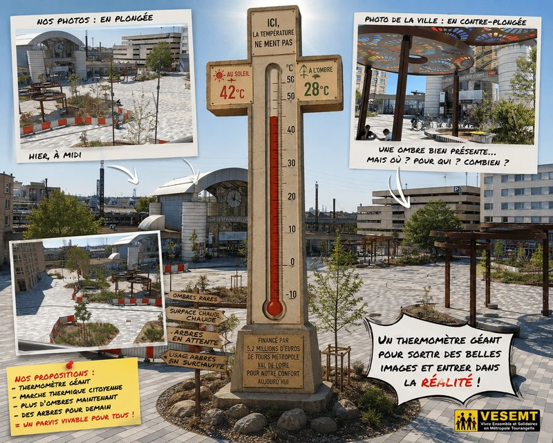

Dans notre précédent article, « Notre Gare – Porte Est Métropolitaine : 5 millions d’euros… et toujours pas un coin d’ombre », nous avions posé une question d’une simplicité presque embarrassante :« Comment peut-on réaménager, pour plus de cinq millions d’euros, l’une des principales portes d’entrée de la Métropole sans garantir aux voyageur.euses et aux habitant.es de véritables espaces de fraîcheur ? »
Nous rappelions alors que le CODEV structure intégrée de Tours Métropole Val de Loire avait consacré un rapport complet à la surchauffe urbaine, à la nécessité de végétaliser, de désimperméabiliser, de créer de l’ombre et d’adapter les espaces publics aux fortes chaleurs. Nous interrogions aussi une concertation pour le moins minimaliste : une réunion, sans compte rendu public, puis le silence radio.
Pour relire le premier épisode : « Notre Gare : Porte Est Métropolitaine : 5 millions d’euros… et toujours pas un coin d’ombre » : https://vesemt.org/?p=830
Depuis, le feuilleton a connu un rebondissement.
Le nouveau parvis est désormais présenté sur le site de la ville comme un espace métamorphosé, plus agréable, plus végétalisé, plus accueillant, avec …. accrochez-vous à vos chapeaux de paille, des « zones d’ombrage ». Le projet est toujours annoncé à 5,2 millions d’euros, financés par Tours Métropole Val de Loire.
Alors, nous avons décidé de retourner sur les lieux (C’est facile j’y habite!)
- Pas avec une pelle.
- Pas avec un communiqué.
- Avec un appareil photo.
- Et surtout avec une question :
L’ombre existe-t-elle réellement sur le parvis… ou seulement dans le cadrage ?
Premier plan : la vidéo en contre-plongée, ou l’art de regarder l’ombre de près
La ville met en avant pour illustrer le nouveau parvis une vidé prise depuis le sol, et pour illustrer l’ombre présente en se plaçant sous l’une des structures colorées. C’est là : https://saintpierredescorps.fr/actualites-agenda/parvis-de-la-gare-un-nouvel-espace-prend-vie
C’est une contre-plongée.
En photographie et au cinéma, la contre-plongée consiste à placer l’objectif plus bas que le sujet et à orienter le regard vers le haut.
- Cette technique donne de la puissance à ce qu’elle filme.
- Elle rend les structures plus imposantes.
- Elle valorise les volumes.
- Elle peut même transformer un petit équipement en monument urbain.
Hitchcock l’aurait compris immédiatement : l’angle ne change pas la réalité, mais il change la manière dont le ou la spectateur.rice la perçoit.
Et la photographie est effectivement réussie.
- Les motifs colorés de la structure occupent une grande partie de l’image.
- Les ombres projetées deviennent graphiques.
- Le regard est attiré vers le plafond décoratif.
- Le parvis semble accueillant.
- Le soleil paraît presque devenu un partenaire du projet.
Mais il y a un petit détail.
Pour voir cette ombre, il faut déjà être dessous.
La photographie ne montre donc pas l’étendue réelle des zones ombragées.
Elle montre une structure qui produit de l’ombre.
Ce qui n’est pas exactement la même chose.
C’est un peu comme photographier un seul arbre et annoncer : « Bonne nouvelle : nous avons réglé le problème de la canicule. »
La contre-plongée donne de la grandeur à l’équipement. Elle ne permet pas forcément de mesurer la place réelle de l’ombre dans l’ensemble du parvis. Et, même sur cette image, la lumière est partout autour.
Le soleil n’a pas disparu. Il attend simplement juste à côté du cadre.
La vidéo montre en contre-plongée qu’il existe de l’ombre. Elle ne démontre pas qu’il y en a suffisamment.
Deuxième plan photographique : la plongée, ou le retour de la réalité à grande échelle
Nos photographies ont été prises hier, autour de midi, depuis un balcon dominant le parvis.
Il s’agit de prises de vue en plongée.
- L’appareil est placé en hauteur et regarde vers le bas.
- La plongée permet de voir l’ensemble.
- Elle révèle les proportions.
- Elle montre les cheminements, les plantations, les zones minérales et la répartition réelle des espaces protégés.
Et, contrairement à la contre-plongée, elle ne peut pas se contenter de montrer une structure isolée.
- Elle montre ce qui l’entoure.
- Elle montre le parvis dans sa totalité.
Et ce que l’on voit est assez parlant.
- De grandes surfaces sont exposées au soleil.
- Les cheminements sont largement découverts.
- Des jeunes arbres sont présents, mais leur taille ne permet pas encore de créer un véritable couvert végétal.
- Les massifs apportent de la vie, de la biodiversité et une amélioration paysagère. Mais, à midi, ils ne produisent pas encore une fraîcheur suffisante pour les milliers de voyageur.euses susceptibles de traverser ou d’attendre sur ce parvis.
- Les structures colorées créent des îlots d’ombre. Mais des îlots. Pas un archipel.Et encore moins une forêt.
Vu du sol, l’ombre paraît grande parce qu’elle remplit l’image. Vue d’en haut, elle paraît petite parce qu’elle occupe peu d’espace. Voilà toute la différence entre le cadrage et la réalité d’usage.
À midi, le soleil n’écoute personne
Nos photographies n’ont pas été prises à l’heure où les ombres s’allongent généreusement.
- Elles n’ont pas été prises au petit matin.
- Ni en début de soirée.
- Elles ont été prises à midi, lorsque le soleil est haut et que les usager.ères ont besoin de savoir s’ils peuvent réellement attendre à l’abri.
Et à midi, le constat est visible :
- le parvis est largement ensoleillé ;
- les surfaces minérales occupent une place importante ;
- les arbres sont encore jeunes ;
- l’ombre est localisée sous les quelques structures colorées
- la fraîcheur reste difficile à trouver.
Personne ne reproche aux arbres de ne pas avoir poussé en quelques mois. Un arbre a besoin de temps.
Mais les habitant.es, les voyageur.euses, les salarié.es et les personnes âgées vivent aujourd’hui.
Ils et elles ne peuvent pas attendre quinze ans sous une promesse de feuillage qui améliorerait la situation
Planter un arbre, c’est préparer l’ombre de demain. Installer un ombrage, c’est protéger les gens aujourd’hui. Les deux sont nécessaires. Mais il ne faut pas confondre un projet de fraîcheur avec une promesse de fraîcheur.
Le CODEV avait pourtant fourni le mode d’emploi
Dans notre premier article, nous rappelions le rapport du CODEV (COmité de DEVeloppelent) intitulé « Une Métropole en surchauffe ? », publié en septembre 2023.
Ce travail citoyen ne disait pas :
- « Faites de belles photographies ou de belles vidéos. »
- Il alertait sur la montée des températures, les effets des îlots de chaleur urbains et la nécessité d’adapter les espaces publics.
- Il évoquait notamment la végétalisation, la désimperméabilisation, la création d’espaces de fraîcheur et la prise en compte du climat dans les politiques d’aménagement.
Le CODEV n’est pas une plante décorative que l’on pose dans un rapport annuel. C’est l’outil principal de participation citoyenne de Tours Métropole Val de Loire.
Et puisque la Métropole est maître d’ouvrage du projet, la question mérite d’être reposée :
Comment les recommandations de son CODEV ont-elles été traduites concrètement dans le réaménagement du parvis ?
Parce que, pour l’instant, nous avons :
- un rapport sur la surchauffe ;
- plus de cinq millions d’euros de travaux ;
- de nouvelles plantations ;
- de belles structures colorées ;
- et toujours une question sur la quantité réelle d’ombre disponible.
Le CODEV disait : « Pensons la ville qui chauffe. » . Le parvis semble avoir répondu : « Pas de problème : on vous a installé un endroit où regarder le soleil autrement. »
Le contre-feu photographique ne fait pas baisser la température
Il est tout à fait légitime de présenter les qualités du nouveau parvis.
- Les cheminements ont été réorganisés.
- Les plantations apportent davantage de végétal.
- Les mobilités ont été repensées. (on reviendra dans un autre texte sur la localisation du « Parc » à vélo » et sur les mobilités PMR)
- Les espaces sont plus ouverts.
- Ces améliorations existent et doivent être reconnues.
Mais une vidéo valorisante ne répond pas automatiquement à une critique sur le confort thermique.
- On peut montrer une structure en contre-plongée.
- On peut la cadrer sous son meilleur angle.
- On peut faire danser les couleurs sur le sol.
Mais une image ne mesure ni la température du dallage ni le nombre de personnes pouvant réellement s’abriter.
Et c’est là que le débat est pourtant intéressant.
Car nous ne demandons pas : « un parvis joli ? ». Nous demandons : « Peut-on y attendre confortablement lorsqu’il fait très chaud ? »
Ce n’est pas le même sujet.
- Le premier relève du regard.
- Le second relève de la qualité de vie.
Proposition : un thermomètre géant plutôt qu’un concours de cadrage
Puisque chacun semble disposer de ses photographies, VESEMT propose de faire entrer dans le débat un acteur beaucoup moins sensible aux angles : le thermomètre.
Nous proposons l’installation permanente d’un thermomètre géant et pédagogique sur le parvis, affichant :
- la température de l’air ;
- la température au soleil ;
- la température sous les structures d’ombrage ;
- la température dans les zones végétalisées ;
- la température des surfaces minérales ;
- l’évolution des mesures entre le matin, midi et la fin d’après-midi.
On pourrait également organiser une marche thermique citoyenne, associant :
- les habitant.es ;
- les usager.ères de la gare ;
- les associations ;
- le CODEV ;
- les élu.es ;
- les services de Tours Métropole Val de Loire ;
- les professionnel.les de l’aménagement et du climat.
L’objectif serait simple : mesurer avant de communiquer.
- Identifier les zones les plus chaudes.
- Repérer les cheminements sans protection.
- Évaluer la capacité réelle d’accueil à l’ombre.
- Étudier l’installation d’ombrages complémentaires pendant la croissance des arbres.
Et publier les résultats.
Parce qu’un thermomètre n’a pas d’angle politique.
- Il ne fait ni plongée ni contre-plongée.
- Il ne choisit pas son cadrage.
- Il ne connaît pas les éléments de langage.
- Il affiche.
Épisode 3 : l’ombre sera-t-elle enfin au rendez-vous ?
Nos photographies en plongée ne prétendent pas juger l’ensemble du projet. Elles montrent simplement le parvis dans sa globalité, hier (le 02/08/2026) à midi.
Les photographies prises en contre-plongée valorisent les équipements d’ombrage. Les nôtres permettent d’observer leur place réelle dans l’ensemble de l’espace.
Vos visuels disent : « Regardez, il y a de l’ombre. » Les nôtres demandent : « Mais combien de personnes peuvent réellement en profiter ? » Et cela mérite mieux qu’un contre-cadrage. Cette question mérite une réponse publique.
Car notre gare est une porte d’entrée métropolitaine. Pas un studio photographique.
Un parvis est un lieu de passage, d’attente, de rencontre et de vie.
Pas une image que l’on peut recadrer dès que le soleil devient gênant.
Alors, rendez-vous dans le prochain épisode.
- Avec les habitants.
- Avec le CODEV.
- Avec des mesures.
Et, espérons-le, avec davantage d’ombre.
Car pour plus de cinq millions d’euros, vu qu’on parle du parvis d’une gare, on ne demande pas la Lune. On demande juste un endroit où ne pas cuire en attendant son train.
Abd-El-Kader AIT-MOHAMED
• Locataire HLM de la Tour de la Galboisière et « Fier de l’être ».
• Membre du Comité populaire et néanmoins bienveillant de Vivre (surtout) Ensemble et (si possible) Solidaires en Métropole Tourangelle (VESEMT).
• Président de l’Association VESEMT.
#NotreGare #SaintPierreDesCorps #ParvisDeLaGare #ToursMétropole #VESEMT #CODEV #ÎlotsDeChaleur #AdaptationClimatique #DroitÀLaFraîcheur #MesurerAvantDeCommuniquer #LeThermomètreNeMentPas #LombreNeSeRecadrePas
Commentaires